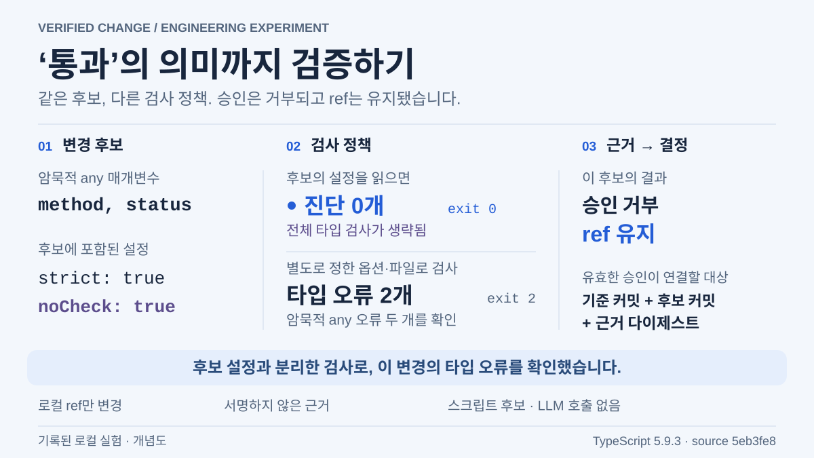
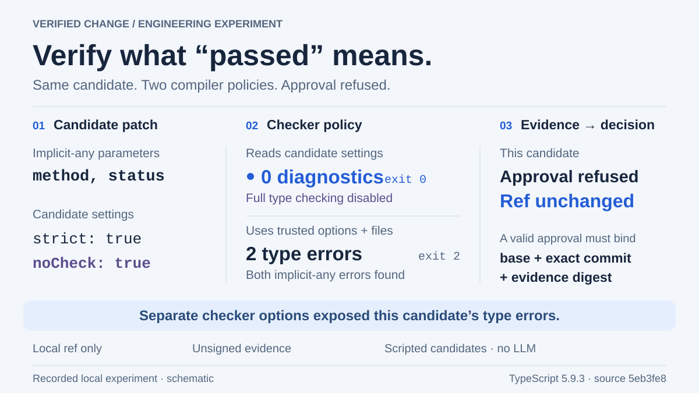

VERIFIED CHANGE / DEVELOPER AUTOMATION
‘통과’의 의미까지 검증하기Verify what “passed” means.
코드에 타입 오류가 남아 있는데 컴파일러는 오류 없이 종료됐습니다. 변경안에 검사 설정도 포함된다면, 그 통과 결과를 승인 근거로 삼아도 될까요?
The compiler exited without errors while type errors remained in the code. If a patch can also change the checking configuration, is that passing result enough to approve the change?
01오류 없이 끝났지만, 타입 검사는 생략됐다No diagnostics, with full type checking disabled
Verified Change는 코드 변경안을 검사·승인한 뒤 해당 Git 커밋을 선택하는 로컬 실험입니다. 여기서 ‘후보’는 검사할 코드와 설정을 담은 변경안입니다. 스크립트로 준비했으며 LLM은 호출하지 않았습니다. 검사 기준을 누가 정하는지, 승인한 코드가 실제 검사한 코드와 같은지를 확인합니다.
암묵적 any 매개변수 두 개를 포함한 같은 후보를
두 TypeScript 프로세스로 검사했습니다. strict: true가
남아 있는 후보의 설정을 읽은 비교용 검사기는 오류를 보고하지
않고 종료 코드 0을 반환했습니다.
별도로 정한 strict 옵션과 정확한 파일 목록을 쓰는 검사기는 오류 두
개를 찾아 종료 코드 2를 반환했고, 승인은
거부됐습니다. 런타임 동작을 확인하는 다섯 개 검증 항목은 모두
통과했습니다.
Verified Change is a local experiment that checks and approves a code change before selecting its Git commit. A “candidate” contains the code and configuration under review. Candidates are scripted; no LLM is called. The questions are who defines the checks and whether approval selects the code they actually checked.
Two TypeScript processes checked the same candidate with two
implicit-any parameters. The comparison checker read the
candidate’s configuration, which still said strict: true,
returned no diagnostics and exited 0. The
trusted checker supplied its own strict options and exact
source-file list. It found both errors, exited 2,
and approval was refused. All five runtime assertions still
passed.
src/retry-policy.ts
export function mayRetry(method, status) {
return (method === 'GET' || method === 'HEAD') &&
(status === 429 || (status >= 500 && status <= 599));
}tsconfig.json — 후보가 정한 옵션candidate-controlled options
{ "compilerOptions": { "strict": true, "noCheck": true } }
noCheck는 전체 타입 검사를 생략하는 옵션입니다.
컴파일러는 설정대로 동작했습니다. 문제는 검사 대상에 포함된
설정으로 필수 타입 검사의 범위까지 바꿀 수 있었다는 점입니다.
TypeScript 공식 문서.
검사기가 옵션과 파일 목록을 직접 정하면, 후보의
tsconfig가 이 검사를 생략시킬 수 없습니다. 다만 TypeScript는
// @ts-nocheck 같은 소스 수준의 지시문을 계속
따릅니다. 현재 정책은 이를 금지하지 않습니다. 소스의 검사 생략
지시문까지 제한하려면, 이를 허용할 조건과 검토 절차를 별도로
정해야 합니다.
소스 지시문에 대한 공식 문서.
noCheck disables full type checking. The compiler was
following its configuration. The required type check used a
configuration the patch could change.
TypeScript documentation.
With checker-owned options and a fixed file list, the candidate’s
configuration cannot disable this check. TypeScript still honors
source-level directives such as // @ts-nocheck, which
this policy allows. Restricting those suppressions requires a
separate policy on when they are allowed and who reviews them.
TypeScript source-directive documentation.


좁은 화면에서는 그림을 좌우로 움직일 수 있습니다. 키보드로 영역을 선택한 뒤 방향키를 사용하세요.On a narrow screen, scroll the figure sideways. Keyboard users can focus this region and use the arrow keys.


02검사한 코드와 검사 기준을 함께 확인하기Check both the code and the rules used to verify it
비교용 결과는 승인 근거로 받지 않습니다. 승인 계층은 결과 보고서와 별개로 필수 검사 목록을 알고 있으며, 프로세스가 성공해도 결과가 비어 있으면 거부합니다. 필수 검사가 모두 실행됐는지와, 각 검사가 요구한 내용을 실제로 확인했는지를 따로 검사해야 합니다.
검사한 코드와 실제로 반영할 코드도 같아야 합니다. 다른 실행 사례에서는 커밋 A를 검사한 뒤 작업 파일을 수정하고, 현재 작업 공간을 새로 커밋해 선택했습니다. 사후 동작 검사가 실패했습니다. 승인 절차를 거친 쪽은 이미 검증한 커밋을 선택했고, 수정된 작업 파일은 그대로 남겼습니다. 여기서 반영은 Git ref가 가리키는 커밋을 바꾸는 일이며, 작업 파일을 갱신하는 일과는 다릅니다.
- 불변 커밋의 스냅샷을 검사하고, 검사 옵션과 필수 파일·검사 목록을 후보의 통제 밖에 둡니다.
- 검사 결과에는 대상 커밋, 실행 식별자, 적용한 검사 기준을 함께 남깁니다. 검사기·제어 코드의 해시와 도구 버전도 기록합니다.
- 승인은 기준 커밋, 후보, 검사 근거의 해시를 지정합니다. 조건부 ref 변경 직전에 다시 대조하고, 유효 기간이 지난 근거는 거부합니다.
Git의 old-value 인수는 현재 ref가 승인된 기준을
가리킬 때만 변경하도록 합니다. 기록된 두 프로세스의 경합에서는 한
번의 변경만 성공했습니다. 후보나 신뢰하는 정책이 바뀌면 다시
검증하고 검토해야 합니다. 검사 기준 자체를 바꾸는 일도 별도 검토가
필요합니다.
The comparison result is excluded from acceptable evidence. The approval code keeps its own list of required checks and rejects empty results even when a process exits successfully. It must establish both that every required check ran and that it examined what the rules required.
Approval must also select the code that was checked. In another recorded case, the workflow checked commit A, edited the workspace, then committed and selected that workspace. A later runtime check failed. The approval path selected the already-verified commit and left the edited files alone. Here, applying a change updates the commit a Git ref points to; it does not update the working files.
- Verify snapshots of an immutable commit. Keep checker options and required source/check inventories outside the candidate’s control.
- Record the target commit, run identifier and checking rules with each result, along with checker/control-source hashes and declared tool versions.
- Approval identifies the expected base, candidate and evidence hash. Compare them again before the conditional ref update and reject expired evidence.
Git’s old-value argument allows the update only while
the ref still points to the approved base. In the recorded
two-process race, one update succeeded. Changing the candidate or
trusted policy requires another verification and review. Changes
to the checking rules also need separate review.
03현재 값이 말해주지 않는 것What the current value cannot tell us
Git이 변경을 수락한 직후, 응답을 남기기 전에 실행 프로세스를 종료했습니다. 재조회는 현재 ref를 알려주지만 누가 바꿨는지는 입증하지 않습니다. 별도의 A→B→A 회귀 검사에서는 기준으로 되돌린 뒤 아직 유효한 승인을 재사용하자 변경이 다시 성공했습니다. 이 회귀 검사는 아래 다섯 사례의 저장 보고서와 구분됩니다. 현재 ref 값이 같아도, 그 사이 다른 값으로 바뀌었다가 돌아왔는지는 알 수 없습니다.
후속 실험에서는 선택한 코드와 승인 사용 기록을 한 상태에 묶었습니다. 코드를 되돌리면서 사용 기록을 남긴 경우와, 기록까지 되감은 경우를 비교합니다.
가상 코드, 실제 로컬 Git·컴파일러 프로세스, 스크립트로 입력한 승인을 사용했고 LLM은 호출하지 않았습니다. 기록은 서명하지 않았으며 로컬 실행 환경을 신뢰합니다. 승인자의 신원 인증이나 악의적 코드 격리, 배포, 외부 동작의 정확히 한 번 실행을 보장하지 않습니다. 변경 대상은 로컬 ref 하나입니다.
The executor was terminated after Git accepted an update but before acknowledgement. Reconciliation observes the current ref; it cannot establish who changed it. A separate A→B→A regression restored the base and successfully reused the same still-fresh approval. That regression is distinct from the five-case saved report linked below. A current-value comparison has no memory of prior transitions.
A follow-up experiment puts code selection and approval receipts in one state. It compares restoring the code while keeping its receipt with rewinding the record itself.
These runs use synthetic code, real local Git/compiler processes and scripted approvals. They use no LLM. The records are unsigned and the local runner is trusted. This does not authenticate a reviewer, isolate hostile code, deploy software or establish exactly-once external execution. The write changes one local ref.
승인하려면 어떤 커밋을 어떤 기준으로 검사했는지, 그 결과를 지금 반영할
변경에 써도 되는지 확인해야 합니다.
Before approving, check which commit was examined, under which rules,
and whether those results still apply to the change you are about to make.
04근거를 직접 읽기Read the evidence
Verified Change의 다섯 사례를 저장한 보고서입니다. 후보가 검사 정책을 약하게 만든 비교는 “검사 결과 누락” 사례 안의 policyCounterexample에 있습니다. 페이지의 그림은 이 반례를 설명하는 도식입니다.
This saved Verified Change report contains five cases. The candidate-controlled policy comparison is policyCounterexample inside the “missing checks” case. The illustration explains that counterexample; it is not a benchmark.
기록 시점과 소스 식별 정보Capture and source identity
- 기록 시점Captured at
- 소스 리비전Source revision
5eb3fe8779ac018617e6a1ac4055cd497629503b- 소스 지문Source fingerprint
-
ce9de689ccf8b0b96db5529fa60ab82c67de6aa84648cd080ee64075892b54d7 - 기록의 범위Recording scope
- 당시 변경 사항이 없는 소스에서 저장한 실행입니다. 현재 HEAD의 새 실행 결과가 아닙니다.Saved from clean source at that revision. This is not a fresh execution of the current HEAD.
- TypeScript: noCheck · strict — 타입 검사 설정의 의미
- Git: update-ref — 이전 값에 조건을 둔 ref 변경
- TypeScript: noCheck · strict — compiler option semantics
- Git: update-ref — conditional updates using the prior value
연결한 실행 기록은 읽기 전용이며, 이 페이지는 실험을 실행하지 않습니다.The linked recording is read-only; this page does not run the experiment.